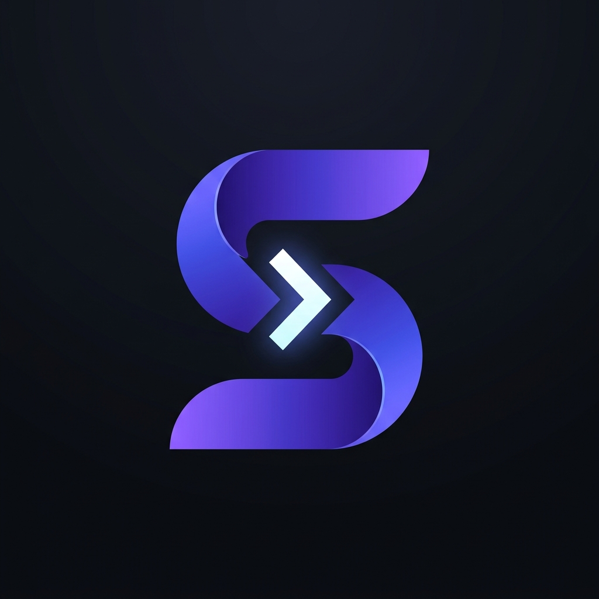

Recommended
Option 1: Fast-Forward Session S
Geometric 'S' + Terminal Prompt '>'
A continuous, aerodynamic ribbon S whose center naturally forms a luminous forward command prompt chevron (>). Merges the Sessions 'S', the CLI prompt, and the active resume motion.